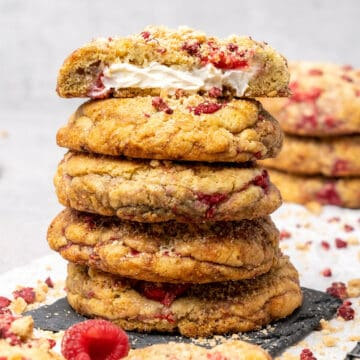

Raspberry cheesecake cookies

These easy raspberry cheesecake cookies are made with fresh raspberries, stuffed with cream cheese filling, and sprinkled with cheesecake crust. They are divine!
Ingredients
- 220 g (1 cups) Unsalted butter room temp.
- 210 g (1 cups) Granulated sugar
- 1 Egg room temp.
- 1 Egg yolk room temp.
- 330 g (2⅔ cups) All purpose
- ¾ Teaspoon Salt
- 1½ Teaspoon Baking soda
- 140 g (1 cups) Fresh Raspberries
- 180 g (¾ cups) Cream cheese eg. Full fat Philadephia
- 30 g (¼ cups) Powdered sugar sifted
Instructions
- Whip cream cheese with powdered sugar for a few minutes, then pipe or spoon 12 equal-sized balls on a parchment paper or silicone baking mat
- Gently flatten the top of the balls so the cream cheese filling looks sort of round but a bit more on the flat side. Freeze for 30-60 minutes
- With an electric hand mixer, whip room-temperature butter with sugar for a few minutes.
- Mix in the egg and egg yolk, just until combined.
- Sift flour, salt, and baking soda together, then fold the flour mixture into the wet ingredients using a Rubber spatula just until combined. Do not overmix.
- Fold in raspberry just until combined, do not mash them into the dough as it can make the dough wet. Leave some raspberries for later so you can place more on top of the half-baked cookies
- Prepare 2 baking pans with parchment
- Divide the dough into 24 equal balls (using a Digital scale is handy) and chill if necessary (if too soft).
- Take one cookie dough portion, place it onto the parchment paper and gently flatten the top. The diameter of the cookie dough should be bigger than the diameter of the frozen cream cheese filling.
- Take one frozen cream cheese filling and place it on top of the cookie dough. Take another cookie dough portion and gently but firmly seal the frozen cream cheese filling inside with the bottom piece of cookie dough.
- Continue with the rest, until you have 12 cream cheese filled cookies
- Let them rest in the fridge for an hour or 20 minutes in the freezer
- Pre-heat oven to 175C / 347°F (no fan)
- Bake the cookies for 25-30 minutes in the following way: Bake for 15 minutes then place some more raspberries on top, then bake them for further 10-15 minutes.
- Let the cookies rest for a few minutes, then carefully remove them from the parchment paper and let them cool on a Cooling rack. The Cookies will further set as they cool. Sprinkle them with crushed Graham crackers (as cheesecake crust) freeze dried raspberries.
- Serve the cookies while they are slightly warm.
- Store refrigerated in an airtight container for 2-3 days.